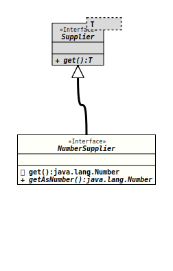

Module org.tquadrat.foundation.base
Package org.tquadrat.foundation.function
Interface NumberSupplier
- Functional Interface:
- This is a functional interface and can therefore be used as the assignment target for a lambda expression or method reference.
@ClassVersion(sourceVersion="$Id: NumberSupplier.java 820 2020-12-29 20:34:22Z tquadrat $")
@FunctionalInterface
@API(status=STABLE,
since="0.0.5")
public interface NumberSupplier
extends Supplier<Number>
Represents a supplier of
There is no requirement that a distinct result is returned each time the supplier is invoked.
This is a functional interface whose functional method is
Number-valued
results. This is the Number-producing specialisation of
Supplier.There is no requirement that a distinct result is returned each time the supplier is invoked.
This is a functional interface whose functional method is
getAsNumber().- Author:
- Thomas Thrien (thomas.thrien@tquadrat.org)
- Version:
- $Id: NumberSupplier.java 820 2020-12-29 20:34:22Z tquadrat $
- Since:
- 0.0.5
- See Also:
- UML Diagram
-

UML Diagram for "org.tquadrat.foundation.function.NumberSupplier"
{kind=link}
-
Field Summary
FieldsModifier and TypeFieldDescriptionstatic final NumberSupplier[]An empty array ofNumberSupplierobjects. -
Method Summary